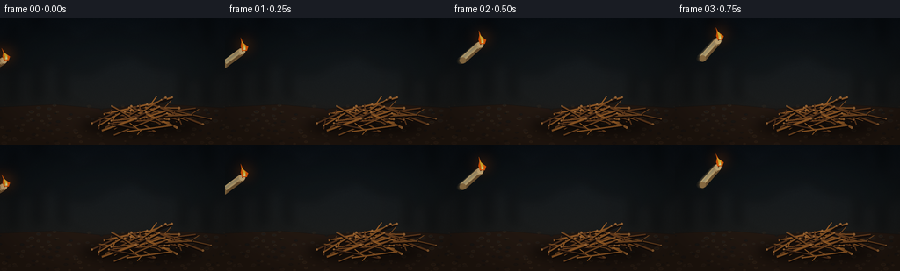
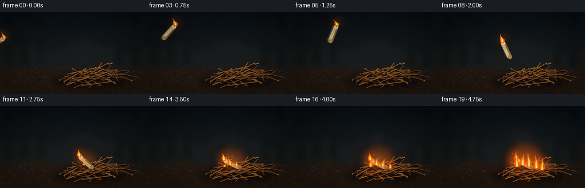

CODING AGENTS AS PIXEL WORLD MODELS
traex/GPT-5.6-Sol · material_0027
点击播放 · 原生 RGB 像素
逐轮保存的候选
回放视频、检查图与代码变化。
每份候选均可单独播放。实际图片检查记录在下方工具轨迹中。
候选 01播放与检查图
点击播放 · 原生 RGB 像素


展开代码变化
--- 上一保存版本
+++ 本次保存版本
@@ -0,0 +1,258 @@
+from pathlib import Path
+import math
+import numpy as np
+from PIL import Image, ImageDraw, ImageFilter
+import artifact_io
+
+W, H, N, FPS = 256, 144, 20, 4.0
+S = 4
+SW, SH = W*S, H*S
+CASE_DIR = Path(__file__).resolve().parent
+
+def sc(v): return int(round(v*S))
+def pts(seq): return [(sc(x), sc(y)) for x,y in seq]
+def box(b): return tuple(sc(v) for v in b)
+
+def make_background():
+ rng = np.random.default_rng(2701)
+ yy, xx = np.mgrid[0:SH, 0:SW]
+ yn = yy/(SH-1)
+ # dusk-to-earth cinematic gradient
+ top = np.array([10,16,22.], float); mid=np.array([27,28,27.]); bottom=np.array([37,25,18.])
+ a = np.clip(yn/0.72,0,1)[...,None]
+ arr = top*(1-a)+mid*a
+ b = np.clip((yn-.66)/.34,0,1)[...,None]
+ arr = arr*(1-b)+bottom*b
+ # soft cool clearing behind the action
+ haze = np.exp(-(((xx/S-151)/105)**2 + ((yy/S-55)/48)**2))*8
+ arr += haze[...,None]*np.array([.45,.55,.62])
+ noise = rng.normal(0,1.5,(SH,SW,1))
+ arr += noise
+ arr = np.clip(arr,0,255).astype(np.uint8)
+ im = Image.fromarray(arr, 'RGB')
+ # distant defocused forest shapes
+ far = Image.new('RGBA',(SW,SH),(0,0,0,0)); d=ImageDraw.Draw(far)
+ trunks=[(12,8,18,96),(39,-4,46,92),(69,12,75,91),(205,4,212,95),(231,-3,240,99)]
+ for x1,y1,x2,y2 in trunks:
+ d.rectangle(box((x1,y1,x2,y2)), fill=(6,10,12,115))
+ for x,y,r in [(21,39,25),(54,26,30),(93,40,29),(188,28,36),(226,45,31),(126,26,28)]:
+ d.ellipse(box((x-r,y-r*.5,x+r,y+r*.8)), fill=(8,14,16,85))
+ far=far.filter(ImageFilter.GaussianBlur(sc(5)))
+ im=Image.alpha_composite(im.convert('RGBA'),far)
+ # earth plane and rough mottling
+ earth=Image.new('RGBA',(SW,SH),(0,0,0,0)); de=ImageDraw.Draw(earth)
+ de.polygon(pts([(0,101),(62,98),(117,103),(176,97),(256,102),(256,144),(0,144)]),fill=(37,25,17,225))
+ for _ in range(180):
+ x=float(rng.uniform(0,256)); y=float(rng.uniform(99,144)); r=float(rng.uniform(.25,1.4))
+ c=rng.choice([(83,58,37,35),(10,12,12,34),(125,85,47,22)])
+ de.ellipse(box((x-r*2,y-r,x+r*2,y+r)),fill=tuple(int(v) for v in c))
+ earth=earth.filter(ImageFilter.GaussianBlur(sc(.35)))
+ return Image.alpha_composite(im,earth)
+
+BASE = make_background()
+rng=np.random.default_rng(8821)
+TWIGS=[]
+# organized chaotic heap: endpoints, width, color, twiglets
+for i in range(42):
+ cx=float(rng.normal(162,22)); cy=float(rng.normal(110,6.5))
+ ang=float(rng.choice([rng.uniform(-.58,.58), rng.uniform(2.58,3.72)]))
+ length=float(rng.uniform(25,67)); width=float(rng.uniform(1.05,2.25))
+ dx=math.cos(ang)*length/2; dy=math.sin(ang)*length/2
+ x1,y1=cx-dx,cy-dy; x2,y2=cx+dx,cy+dy
+ col=rng.choice([(105,62,30),(126,76,34),(82,49,27),(151,92,38),(94,57,31)])
+ tw=[]
+ for k in range(rng.integers(0,3)):
+ q=float(rng.uniform(.2,.8)); bx=x1+(x2-x1)*q; by=y1+(y2-y1)*q
+ aa=ang+float(rng.choice([-1,1]))*float(rng.uniform(.55,1.05)); ll=float(rng.uniform(6,14))
+ tw.append((bx,by,bx+math.cos(aa)*ll,by+math.sin(aa)*ll))
+ TWIGS.append(dict(p=(x1,y1,x2,y2),w=width,c=tuple(int(v) for v in col),tw=tw,depth=cy))
+TWIGS.sort(key=lambda z:z['depth'])
+
+
+def draw_ground_shadow(im, strength=1.0):
+ sh=Image.new('RGBA',(SW,SH),(0,0,0,0)); d=ImageDraw.Draw(sh)
+ d.ellipse(box((91,110,227,135)),fill=(0,0,0,int(130*strength)))
+ sh=sh.filter(ImageFilter.GaussianBlur(sc(6)))
+ im.alpha_composite(sh)
+
+def draw_twigs(im, items, fire_q=0):
+ layer=Image.new('RGBA',(SW,SH),(0,0,0,0)); d=ImageDraw.Draw(layer)
+ for z in items:
+ x1,y1,x2,y2=z['p']; w=z['w']; c=z['c']
+ # warm reflection grows locally after impact
+ mx=(x1+x2)/2
+ warm=max(0,1-abs(mx-151)/75)*fire_q
+ col=(min(255,int(c[0]+55*warm)), min(255,int(c[1]+20*warm)), max(10,int(c[2]-3*warm)),255)
+ d.line(pts([(x1+.7,y1+1.0),(x2+.7,y2+1.0)]),fill=(18,11,8,210),width=max(1,sc(w+1.1)))
+ d.line(pts([(x1,y1),(x2,y2)]),fill=col,width=max(2,sc(w)))
+ d.line(pts([(x1,y1-.25),(x2,y2-.25)]),fill=(min(255,col[0]+34),min(255,col[1]+24),min(255,col[2]+12),130),width=max(1,sc(w*.32)))
+ # pale cut ends
+ rr=max(.75,w*.63)
+ d.ellipse(box((x2-rr,y2-rr,x2+rr,y2+rr)),fill=(177,117,60,210))
+ for a,b,cx,cy in z['tw']:
+ d.line(pts([(a,b),(cx,cy)]),fill=col,width=max(2,sc(w*.63)))
+ im.alpha_composite(layer)
+
+def candle_pose(f):
+ if f <= 10:
+ t=f/10
+ x=-7+157*t
+ y=55+47*t-160*t*(1-t)
+ theta=math.radians(-32-123*t+25*math.sin(t*math.pi))
+ elif f==11:
+ x,y,theta=151,99,math.radians(-138)
+ else:
+ x,y,theta=151,102,math.radians(-155)
+ return x,y,theta
+
+def flame_shape(layer, base, height, width, lean, phase, alpha=255):
+ bx,by=base
+ tip=(bx+lean+1.4*math.sin(phase), by-height)
+ # broad outer flame, stylized organic curves
+ poly=[(bx-width*.58,by+1),(bx-width*.88,by-height*.28),
+ (bx-width*.34+lean*.35,by-height*.62),tip,
+ (bx+width*.28+lean*.55,by-height*.57),(bx+width*.83,by-height*.25),(bx+width*.55,by+1)]
+ d=ImageDraw.Draw(layer)
+ d.polygon(pts(poly), fill=(255,99,10,alpha))
+ inner=[(bx-width*.32,by),(bx-width*.34,by-height*.27),
+ (bx+lean*.6,by-height*.70),(bx+width*.24,by-height*.34),(bx+width*.3,by)]
+ d.polygon(pts(inner),fill=(255,210,55,alpha))
+ core=[(bx-width*.15,by),(bx-.15,by-height*.28),(bx+width*.14,by-height*.12),(bx+width*.14,by)]
+ d.polygon(pts(core),fill=(255,247,190,alpha))
+
+def add_glow(im, centers, power=1.0):
+ glow=Image.new('RGBA',(SW,SH),(0,0,0,0)); d=ImageDraw.Draw(glow)
+ for x,y,r in centers:
+ d.ellipse(box((x-r,y-r,x+r,y+r)),fill=(255,87,13,int(105*power)))
+ d.ellipse(box((x-r*.35,y-r*.35,x+r*.35,y+r*.35)),fill=(255,191,52,int(110*power)))
+ glow=glow.filter(ImageFilter.GaussianBlur(sc(8)))
+ im.alpha_composite(glow)
+
+def candle_geometry(x,y,theta):
+ u=np.array([math.cos(theta),math.sin(theta)])
+ n=np.array([-u[1],u[0]])
+ L=27.; wid=8.2
+ ctr=np.array([x,y]); top=ctr+u*L/2; base=ctr-u*L/2
+ return u,n,L,wid,top,base
+
+def draw_candle(im,x,y,theta,opacity=255, landed=False):
+ u,n,L,wid,top,base=candle_geometry(x,y,theta)
+ layer=Image.new('RGBA',(SW,SH),(0,0,0,0)); d=ImageDraw.Draw(layer)
+ if landed:
+ d.ellipse(box((x-19,y+2,x+18,y+10)),fill=(0,0,0,105))
+ corners=[base+n*wid/2, top+n*wid/2, top-n*wid/2, base-n*wid/2]
+ d.polygon(pts(corners),fill=(218,190,132,opacity))
+ # shaded lower edge and wax highlights
+ shade=[base+n*wid/2, top+n*wid/2, top+n*wid*.15,base+n*wid*.15]
+ d.polygon(pts(shade),fill=(151,113,66,int(opacity*.78)))
+ hi=[base-n*wid*.10,top-n*wid*.10,top-n*wid*.34,base-n*wid*.34]
+ d.polygon(pts(hi),fill=(255,231,171,int(opacity*.64)))
+ # wax drips from top down body
+ for off,ln in [(-1.8,3.5),(1.8,5.2)]:
+ p0=top+n*off; p1=p0-u*ln
+ d.line(pts([p0,p1]),fill=(246,220,159,int(opacity*.8)),width=max(1,sc(.85)))
+ # round wax ends
+ d.ellipse(box((base[0]-wid*.43,base[1]-wid*.43,base[0]+wid*.43,base[1]+wid*.43)),fill=(183,143,86,int(opacity*.8)))
+ d.ellipse(box((top[0]-wid*.43,top[1]-wid*.43,top[0]+wid*.43,top[1]+wid*.43)),fill=(245,218,157,opacity))
+ # wick protrudes along axis; charred tip
+ wick_end=top+u*3.1
+ d.line(pts([top,wick_end]),fill=(32,20,14,opacity),width=max(2,sc(1.05)))
+ im.alpha_composite(layer)
+ return wick_end
+
+def draw_smoke(im,f):
+ if f < 10: return
+ layer=Image.new('RGBA',(SW,SH),(0,0,0,0)); d=ImageDraw.Draw(layer)
+ for spawn in range(10,f+1):
+ age=(f-spawn)/4.0
+ for j in range(2):
+ seed=spawn*17+j*43
+ x=145 + 6*math.sin(age*2.0+seed) + (spawn-10)*.7
+ y=91-age*21-j*4
+ r=3.0+age*3.3+j
+ a=int(max(0,55-age*13))
+ d.ellipse(box((x-r*1.5,y-r,x+r*1.5,y+r)),fill=(46,43,39,a))
+ layer=layer.filter(ImageFilter.GaussianBlur(sc(3.2)))
+ im.alpha_composite(layer)
+
+def draw_sparks(im,f,q):
+ if f<10:return
+ layer=Image.new('RGBA',(SW,SH),(0,0,0,0)); d=ImageDraw.Draw(layer)
+ count=11 if f<=12 else int(4+q*7)
+ for k in range(count):
+ # deterministic sparks fan outward then rise
+ birth=10+(k%4)
+ age=max(0,f-birth)
+ a=(k*1.77+.5)
+ x=148+math.cos(a)*age*(1.5+(k%3)*.45)
+ y=95-math.sin(a)*age*.7-age*(1.0+(k%2)*.5)
+ if 8<x<250 and 10<y<130:
+ rr=.45+(k%3)*.18
+ d.ellipse(box((x-rr,y-rr,x+rr,y+rr)),fill=(255,191,51,max(0,230-age*22)))
+ if age>1:d.line(pts([(x,y),(x-math.cos(a)*2,y+2.5)]),fill=(255,106,18,100),width=sc(.45))
+ im.alpha_composite(layer)
+
+def render_frame(f):
+ im=BASE.copy()
+ q=max(0,min(1,(f-10)/9))
+ # localized fire light on ground before material details
+ if f>=10:
+ add_glow(im,[(151,98,21+q*15)],.65+.35*q)
+ draw_smoke(im,f)
+ draw_ground_shadow(im)
+ # back 80% of pile
+ split=33
+ draw_twigs(im,TWIGS[:split],fire_q=q)
+ x,y,th=candle_pose(f)
+ # restrained moving-body blur before impact
+ if 1<=f<=9:
+ for lag,op in [(0.18,35),(0.09,65)]:
+ ff=max(0,f-lag)
+ t=ff/10; bx=-7+157*t; by=55+47*t-160*t*(1-t)
+ bt=math.radians(-32-123*t+25*math.sin(t*math.pi))
+ draw_candle(im,bx,by,bt,opacity=op)
+ wick=draw_candle(im,x,y,th,255,landed=f>=10)
+ # foreground sticks partially bury candle
+ draw_twigs(im,TWIGS[split:],fire_q=q)
+ flames=Image.new('RGBA',(SW,SH),(0,0,0,0))
+ glows=[]
+ if f<10:
+ # flame clings to airborne wick, streaming backward from motion
+ phase=f*.92
+ h=12.5+1.7*math.sin(phase); fw=5.0
+ glows=[(wick[0],wick[1]-5,13)]
+ add_glow(im,glows,.65)
+ flame_shape(flames,(wick[0],wick[1]+.3),h,fw,-5.4,phase)
+ else:
+ phase=f*.81
+ # original candle flame remains visible at its wick
+ flame_shape(flames,(wick[0],wick[1]),11+3*q,4.7,-1.6,phase)
+ glows.append((wick[0],wick[1]-5,14))
+ # dry twigs catch progressively, not instant inferno
+ sites=[(147,103,0.02,12),(158,106,.18,17),(137,106,.38,16),(171,109,.56,19),(181,112,.78,14)]
+ for j,(fx,fy,start,mh) in enumerate(sites):
+ local=max(0,min(1,(q-start)/max(.01,1-start)))
+ if local>0:
+ hh=5+mh*local+2.2*math.sin(phase*1.25+j*1.7)
+ ww=3.0+3.2*local
+ flame_shape(flames,(fx,fy),hh,ww,2.5*math.sin(phase+j),phase+j*.8,int(240+15*local))
+ glows.append((fx,fy-hh*.35,10+9*local))
+ add_glow(im,glows,.5+.4*q)
+ im.alpha_composite(flames)
+ draw_sparks(im,f,q)
+ # subtle vignette and warm exposure pulse
+ arr=np.asarray(im.convert('RGB')).astype(np.float32)
+ yy,xx=np.mgrid[0:H*S,0:W*S]; dx=(xx-W*S/2)/(W*S/2); dy=(yy-H*S/2)/(H*S/2)
+ vig=np.clip(1-.23*(dx*dx+dy*dy),.68,1)[...,None]
+ arr*=vig
+ arr=np.clip(arr,0,255).astype(np.uint8)
+ out=Image.fromarray(arr).resize((W,H),Image.Resampling.LANCZOS)
+ return np.asarray(out,dtype=np.uint8)
+
+def main():
+ frames=np.stack([render_frame(i) for i in range(N)])
+ artifact_io.save(frames,CASE_DIR)
+ print('saved',frames.shape,frames.dtype)
+
+if __name__=='__main__':
+ main()
可观测工具轨迹
实际执行的命令与返回图片。
命令 1exit 0
/bin/bash -lc "ls -la && printf '\\n--- prompt.txt ---\\n' && cat prompt.txt && printf '\\n--- GENERATION_RULES.md ---\\n' && cat GENERATION_RULES.md && printf '\\n--- task_spec.json ---\\n' && cat task_spec.json"
命令 2exit 0
/bin/bash -lc "sed -n '1,260p' artifact_io.py"
命令 3exit 0
/bin/bash -lc "cat > generate.py <<'PY'
from pathlib import Path
import math
import numpy as np
from PIL import Image, ImageDraw, ImageFilter
import artifact_io
W, H, N, FPS = 256, 144, 20, 4.0
S = 4
SW, SH = W*S, H*S
CASE_DIR = Path(__file__).resolve().parent
def sc(v): return int(round(v*S))
def pts(seq): return [(sc(x), sc(y)) for x,y in seq]
def box(b): return tuple(sc(v) for v in b)
def make_background():
rng = np.random.default_rng(2701)
yy, xx = np.mgrid[0:SH, 0:SW]
yn = yy/(SH-1)
# dusk-to-earth cinematic gradient
top = np.array([10,16,22.], float); mid=np.array([27,28,27.]); bottom=np.array([37,25,18.])
a = np.clip(yn/0.72,0,1)[...,None]
arr = top*(1-a)+mid*a
b = np.clip((yn-.66)/.34,0,1)[...,None]
arr = arr*(1-b)+bottom*b
# soft cool clearing behind the action
haze = np.exp(-(((xx/S-151)/105)**2 + ((yy/S-55)/48)**2))*8
arr += haze[...,None]*np.array([.45,.55,.62])
noise = rng.normal(0,1.5,(SH,SW,1))
arr += noise
arr = np.clip(arr,0,255).astype(np.uint8)
im = Image.fromarray(arr, 'RGB')
# distant defocused forest shapes
far = Image.new('RGBA',(SW,SH),(0,0,0,0)); d=ImageDraw.Draw(far)
trunks=[(12,8,18,96),(39,-4,46,92),(69,12,75,91),(205,4,212,95),(231,-3,240,99)]
for x1,y1,x2,y2 in trunks:
d.rectangle(box((x1,y1,x2,y2)), fill=(6,10,12,115))
for x,y,r in [(21,39,25),(54,26,30),(93,40,29),(188,28,36),(226,45,31),(126,26,28)]:
d.ellipse(box((x-r,y-r*.5,x+r,y+r*.8)), fill=(8,14,16,85))
far=far.filter(ImageFilter.GaussianBlur(sc(5)))
im=Image.alpha_composite(im.convert('RGBA'),far)
# earth plane and rough mottling
earth=Image.new('RGBA',(SW,SH),(0,0,0,0)); de=ImageDraw.Draw(earth)
de.polygon(pts([(0,101),(62,98),(117,103),(176,97),(256,102),(256,144),(0,144)]),fill=(37,25,17,225))
for _ in range(180):
x=float(rng.uniform(0,256)); y=float(rng.uniform(99,144)); r=float(rng.uniform(.25,1.4))
c=rng.choice([(83,58,37,35),(10,12,12,34),(125,85,47,22)])
de.ellipse(box((x-r*2,y-r,x+r*2,y+r)),fill=tuple(int(v) for v in c))
earth=earth.filter(ImageFilter.GaussianBlur(sc(.35)))
return Image.alpha_composite(im,earth)
BASE = make_background()
rng=np.random.default_rng(8821)
TWIGS=[]
# organized chaotic heap: endpoints, width, color, twiglets
for i in range(42):
cx=float(rng.normal(162,22)); cy=float(rng.normal(110,6.5))
ang=float(rng.choice([rng.uniform(-.58,.58), rng.uniform(2.58,3.72)]))
length=float(rng.uniform(25,67)); width=float(rng.uniform(1.05,2.25))
dx=math.cos(ang)*length/2; dy=math.sin(ang)*length/2
x1,y1=cx-dx,cy-dy; x2,y2=cx+dx,cy+dy
col=rng.choice([(105,62,30),(126,76,34),(82,49,27),(151,92,38),(94,57,31)])
tw=[]
for k in range(rng.integers(0,3)):
q=float(rng.uniform(.2,.8)); bx=x1+(x2-x1)*q; by=y1+(y2-y1)*q
aa=ang+float(rng.choice([-1,1]))*float(rng.uniform(.55,1.05)); ll=float(rng.uniform(6,14))
tw.append((bx,by,bx+math.cos(aa)*ll,by+math.sin(aa)*ll))
TWIGS.append(dict(p=(x1,y1,x2,y2),w=width,c=tuple(int(v) for v in col),tw=tw,depth=cy))
TWIGS.sort(key=lambda z:z['depth'])
def draw_ground_shadow(im, strength=1.0):
sh=Image.new('RGBA',(SW,SH),(0,0,0,0)); d=ImageDraw.Draw(sh)
d.ellipse(box((91,110,227,135)),fill=(0,0,0,int(130*strength)))
sh=sh.filter(ImageFilter.GaussianBlur(sc(6)))
im.alpha_composite(sh)
def draw_twigs(im, items, fire_q=0):
layer=Image.new('RGBA',(SW,SH),(0,0,0,0)); d=ImageDraw.Draw(layer)
for z in items:
x1,y1,x2,y2=z['p']; w=z['w']; c=z['c']
# warm reflection grows locally after impact
mx=(x1+x2)/2
warm=max(0,1-abs(mx-151)/75)*fire_q
col=(min(255,int(c[0]+55*warm)), min(255,int(c[1]+20*warm)), max(10,int(c[2]-3*warm)),255)
d.line(pts([(x1+.7,y1+1.0),(x2+.7,y2+1.0)]),fill=(18,11,8,210),width=max(1,sc(w+1.1)))
d.line(pts([(x1,y1),(x2,y2)]),fill=col,width=max(2,sc(w)))
d.line(pts([(x1,y1-.25),(x2,y2-.25)]),fill=(min(255,col[0]+34),min(255,col[1]+24),min(255,col[2]+12),130),width=max(1,sc(w*.32)))
# pale cut ends
rr=max(.75,w*.63)
d.ellipse(box((x2-rr,y2-rr,x2+rr,y2+rr)),fill=(177,117,60,210))
for a,b,cx,cy in z['tw']:
d.line(pts([(a,b),(cx,cy)]),fill=col,width=max(2,sc(w*.63)))
im.alpha_composite(layer)
def candle_pose(f):
if f <= 10:
t=f/10
x=-7+157*t
y=55+47*t-160*t*(1-t)
theta=math.radians(-32-123*t+25*math.sin(t*math.pi))
elif f==11:
x,y,theta=151,99,math.radians(-138)
else:
x,y,theta=151,102,math.radians(-155)
return x,y,theta
def flame_shape(layer, base, height, width, lean, phase, alpha=255):
bx,by=base
tip=(bx+lean+1.4*math.sin(phase), by-height)
# broad outer flame, stylized organic curves
poly=[(bx-width*.58,by+1),(bx-width*.88,by-height*.28),
(bx-width*.34+lean*.35,by-height*.62),tip,
(bx+width*.28+lean*.55,by-height*.57),(bx+width*.83,by-height*.25),(bx+width*.55,by+1)]
d=ImageDraw.Draw(layer)
d.polygon(pts(poly), fill=(255,99,10,alpha))
inner=[(bx-width*.32,by),(bx-width*.34,by-height*.27),
(bx+lean*.6,by-height*.70),(bx+width*.24,by-height*.34),(bx+width*.3,by)]
d.polygon(pts(inner),fill=(255,210,55,alpha))
core=[(bx-width*.15,by),(bx-.15,by-height*.28),(bx+width*.14,by-height*.12),(bx+width*.14,by)]
d.polygon(pts(core),fill=(255,247,190,alpha))
def add_glow(im, centers, power=1.0):
glow=Image.new('RGBA',(SW,SH),(0,0,0,0)); d=ImageDraw.Draw(glow)
for x,y,r in centers:
d.ellipse(box((x-r,y-r,x+r,y+r)),fill=(255,87,13,int(105*power)))
d.ellipse(box((x-r*.35,y-r*.35,x+r*.35,y+r*.35)),fill=(255,191,52,int(110*power)))
glow=glow.filter(ImageFilter.GaussianBlur(sc(8)))
im.alpha_composite(glow)
def candle_geometry(x,y,theta):
u=np.array([math.cos(theta),math.sin(theta)])
n=np.array([-u[1],u[0]])
L=27.; wid=8.2
ctr=np.array([x,y]); top=ctr+u*L/2; base=ctr-u*L/2
return u,n,L,wid,top,base
def draw_candle(im,x,y,theta,opacity=255, landed=False):
u,n,L,wid,top,base=candle_geometry(x,y,theta)
layer=Image.new('RGBA',(SW,SH),(0,0,0,0)); d=ImageDraw.Draw(layer)
if landed:
d.ellipse(box((x-19,y+2,x+18,y+10)),fill=(0,0,0,105))
corners=[base+n*wid/2, top+n*wid/2, top-n*wid/2, base-n*wid/2]
d.polygon(pts(corners),fill=(218,190,132,opacity))
# shaded lower edge and wax highlights
shade=[base+n*wid/2, top+n*wid/2, top+n*wid*.15,base+n*wid*.15]
d.polygon(pts(shade),fill=(151,113,66,int(opacity*.78)))
hi=[base-n*wid*.10,top-n*wid*.10,top-n*wid*.34,base-n*wid*.34]
d.polygon(pts(hi),fill=(255,231,171,int(opacity*.64)))
# wax drips from top down body
for off,ln in [(-1.8,3.5),(1.8,5.2)]:
p0=top+n*off; p1=p0-u*ln
d.line(pts([p0,p1]),fill=(246,220,159,int(opacity*.8)),width=max(1,sc(.85)))
# round wax ends
d.ellipse(box((base[0]-wid*.43,base[1]-wid*.43,base[0]+wid*.43,base[1]+wid*.43)),fill=(183,143,86,int(opacity*.8)))
d.ellipse(box((top[0]-wid*.43,top[1]-wid*.43,top[0]+wid*.43,top[1]+wid*.43)),fill=(245,218,157,opacity))
# wick protrudes along axis; charred tip
wick_end=top+u*3.1
d.line(pts([top,wick_end]),fill=(32,20,14,opacity),width=max(2,sc(1.05)))
im.alpha_composite(layer)
return wick_end
def draw_smoke(im,f):
if f < 10: return
layer=Image.new('RGBA',(SW,SH),(0,0,0,0)); d=ImageDraw.Draw(layer)
for spawn in range(10,f+1):
age=(f-spawn)/4.0
for j in range(2):
seed=spawn*17+j*43
x=145 + 6*math.sin(age*2.0+seed) + (spawn-10)*.7
y=91-age*21-j*4
r=3.0+age*3.3+j
a=int(max(0,55-age*13))
d.ellipse(box((x-r*1.5,y-r,x+r*1.5,y+r)),fill=(46,43,39,a))
layer=layer.filter(ImageFilter.GaussianBlur(sc(3.2)))
im.alpha_composite(layer)
def draw_sparks(im,f,q):
if f<10:return
layer=Image.new('RGBA',(SW,SH),(0,0,0,0)); d=ImageDraw.Draw(layer)
count=11 if f<=12 else int(4+q*7)
for k in range(count):
# deterministic sparks fan outward then rise
birth=10+(k%4)
age=max(0,f-birth)
a=(k*1.77+.5)
x=148+math.cos(a)*age*(1.5+(k%3)*.45)
y=95-math.sin(a)*age*.7-age*(1.0+(k%2)*.5)
if 8<x<250 and 10<y<130:
rr=.45+(k%3)*.18
d.ellipse(box((x-rr,y-rr,x+rr,y+rr)),fill=(255,191,51,max(0,230-age*22)))
if age>1:d.line(pts([(x,y),(x-math.cos(a)*2,y+2.5)]),fill=(255,106,18,100),width=sc(.45))
im.alpha_composite(layer)
def render_frame(f):
im=BASE.copy()
q=max(0,min(1,(f-10)/9))
# localized fire light on ground before material details
if f>=10:
add_glow(im,[(151,98,21+q*15)],.65+.35*q)
draw_smoke(im,f)
draw_ground_shadow(im)
# back 80% of pile
split=33
draw_twigs(im,TWIGS[:split],fire_q=q)
x,y,th=candle_pose(f)
# restrained moving-body blur before impact
if 1<=f<=9:
for lag,op in [(0.18,35),(0.09,65)]:
ff=max(0,f-lag)
t=ff/10; bx=-7+157*t; by=55+47*t-160*t*(1-t)
bt=math.radians(-32-123*t+25*math.sin(t*math.pi))
draw_candle(im,bx,by,bt,opacity=op)
wick=draw_candle(im,x,y,th,255,landed=f>=10)
# foreground sticks partially bury candle
draw_twigs(im,TWIGS[split:],fire_q=q)
flames=Image.new('RGBA',(SW,SH),(0,0,0,0))
glows=[]
if f<10:
# flame clings to airborne wick, streaming backward from motion
phase=f*.92
h=12.5+1.7*math.sin(phase); fw=5.0
glows=[(wick[0],wick[1]-5,13)]
add_glow(im,glows,.65)
flame_shape(flames,(wick[0],wick[1]+.3),h,fw,-5.4,phase)
else:
phase=f*.81
# original candle flame remains visible at its wick
flame_shape(flames,(wick[0],wick[1]),11+3*q,4.7,-1.6,phase)
glows.append((wick[0],wick[1]-5,14))
# dry twigs catch progressively, not instant inferno
sites=[(147,103,0.02,12),(158,106,.18,17),(137,106,.38,16),(171,109,.56,19),(181,112,.78,14)]
for j,(fx,fy,start,mh) in enumerate(sites):
local=max(0,min(1,(q-start)/max(.01,1-start)))
if local>0:
hh=5+mh*local+2.2*math.sin(phase*1.25+j*1.7)
ww=3.0+3.2*local
flame_shape(flames,(fx,fy),hh,ww,2.5*math.sin(phase+j),phase+j*.8,int(240+15*local))
glows.append((fx,fy-hh*.35,10+9*local))
add_glow(im,glows,.5+.4*q)
im.alpha_composite(flames)
draw_sparks(im,f,q)
# subtle vignette and warm exposure pulse
arr=np.asarray(im.convert('RGB')).astype(np.float32)
yy,xx=np.mgrid[0:H*S,0:W*S]; dx=(xx-W*S/2)/(W*S/2); dy=(yy-H*S/2)/(H*S/2)
vig=np.clip(1-.23*(dx*dx+dy*dy),.68,1)[...,None]
arr*=vig
arr=np.clip(arr,0,255).astype(np.uint8)
out=Image.fromarray(arr).resize((W,H),Image.Resampling.LANCZOS)
return np.asarray(out,dtype=np.uint8)
def main():
frames=np.stack([render_frame(i) for i in range(N)])
artifact_io.save(frames,CASE_DIR)
print('saved',frames.shape,frames.dtype)
if __name__=='__main__':
main()
PY
python generate.py
ls -lh pixels.npz inspection.png transition_check.png index.html frames/00.png frames/19.png"视觉工具实际返回图片 1

视觉工具实际返回图片 2

保存候选 1 份；完成命令 3 次；可验证图片返回 2 张。原始 API 响应与完整日志保留在本地。